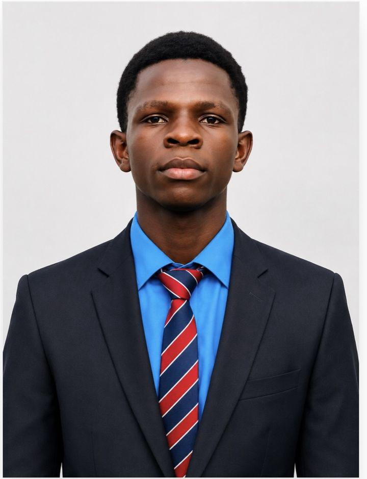

GestIDA
Application de gestion des inscriptions des étudiants.
GestionBase de donnéesJe m'appelle Romaric Assi, développeur d'applications. Je cherche un stage pour mettre mes compétences au service d'une équipe.
Proposer un stage ↗ Consulter mes réalisations ↗
Développeur webDiplômé du BTS Informatique et Développeur d'Applications de l'Institut International de Technologie Supérieure (2ITS) à Abidjan, je conçois des applications de gestion : modélisation de la base de données, pages web et logique métier.
Je veux maintenant apprendre en situation réelle, dans une entreprise qui développe des applications.
Application de gestion des inscriptions des étudiants.
GestionBase de donnéesApplication mobile de transfert d'argent par mobile money, avec son cahier des charges.
Mobile moneyCahier des chargesProjet d'équipe encadré par un enseignant. J'ai participé à la conception de la base de données.
WinDevTravail d'équipeGestion des élèves, des notes et des classes d'un établissement.
ÉlèvesNotesClasses